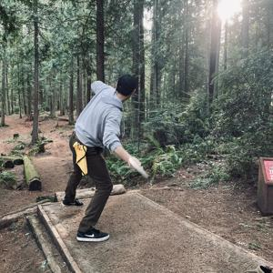

About Me
 Hi, I'm Marshall Banks! You probably guessed that from my name in massive letters... Anyways, about me! I sort of fell into my tech career by accident. Born from my need to support my community theater addiction (and, admittedly, my penchant for being a "goof" on stage) I picked up a data entry role which culminated in me being dropped into the deep end of the I.T. department with zero technical experience. I learned a lot about my self there, I liked to help people, I liked solving problems, and I wanted to use code as a means to do so.
Hi, I'm Marshall Banks! You probably guessed that from my name in massive letters... Anyways, about me! I sort of fell into my tech career by accident. Born from my need to support my community theater addiction (and, admittedly, my penchant for being a "goof" on stage) I picked up a data entry role which culminated in me being dropped into the deep end of the I.T. department with zero technical experience. I learned a lot about my self there, I liked to help people, I liked solving problems, and I wanted to use code as a means to do so.
With a B.S. in Software Development from Western Governors University and skills in C#, SQL, and Python, I'm all about creating solutions that make a difference. My experiences have taught me the importance of teamwork, perseverance, and the occasional need to step back and recharge.
When I'm not coding or troubleshooting, you'll find me indulging in disc golf, video games, music, or sitting on the couch with my wife, watching "The Office" for the millionth time. And of course, whenever possible, exploring the outdoors of the Pacific Northwest (peep the olympic national forest above).
As for the future, I'm exploring different facets of programming, from AI to app development, always with an eye for how technology can improve our lives. Also, I'm a big MegaMan fan—you might have noticed MegaMan's helmet as my icon! Feel free to connect with me using the links below!
Where I've Worked
- DSHS
- Kittitas Valley Healthcare
- EF Recovery
Application Developer @ WA STATE DSHS
Dec 2023 - Present
- Deliver high-quality, robust production code for a diverse array of projects.
- Work alongside creative directors to lead the research, development, and architecture of technical solutions.
- Collaborate with designers, project managers, and other engineers to transform creative concepts into production realities.
- Provide leadership within the engineering department through close collaboration, knowledge shares, and mentorship.
Technology Support Specialist II @ Kittitas Valley Healthcare
Jan 2019 - Oct 2022
- Troubleshot Windows/Windows Server OS, iOS, Android, MacOS, applications, peripherals, and hardware locally and remotely, recording in ticketing system.
- Updated knowledge base for specialized Biomed equipment, interfaces, medical devices, web portals, signature pads, etc.
- Managed and deployed all hospital cell phones and iPads.
- Fielded calls from all departments and handled repair, replacement, and installation tasks.
- Deployed computers, printers, webcams, cell phones, tablets, scanners, signature pads, and barcode scanners.
- Repaired and imaged laptops, workstations, thin clients, and tablets.
- Recycled retired equipment and organized storage areas.
- On-call one week each month for 24/7 emergency support.
IT Tier I Support | Implementation Coordinator @ EF Recovery
Mar 2015 - Dec 2018
- Managed SQL databases, including tasks such as record unlocking and data merging.
- Liaised between users and developers to resolve issues and improve systems during the SDLC.
- Contributed to Agile meetings with user feedback and testing insights.
- Led client onboarding, gathering feedback to inform application development.
- Conducted hands-on user testing to ensure user-centric design and functionality.
Role @ Company 4
Date - Date
- Job description 4.
- Job description 4.
- Job description 4.
- Job description 4.
Role @ Company 5
Date - Date
- Job description 5.
- Job description 5.
- Job description 5.
- Job description 5.
Some Nice Things People Said About Me
Hey Marshall, I just wanted to thank you again for the great work on the SEMSBrowser project. All of your code passed testing in QA and is being staged for release. Well done! Your attention to detail and thorough communication style was greatly appreciated in this effort by several folks. -Stephen Noski (IT App Development - Supervisor)
Education
Text
Projects
Text